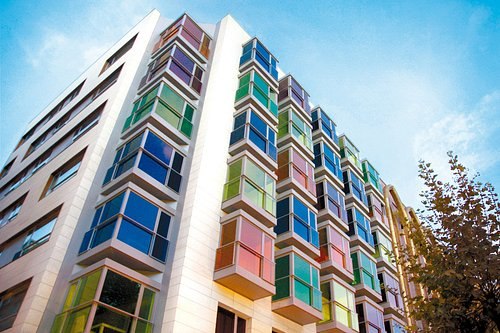
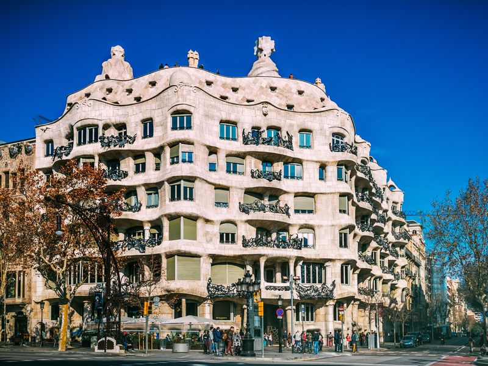
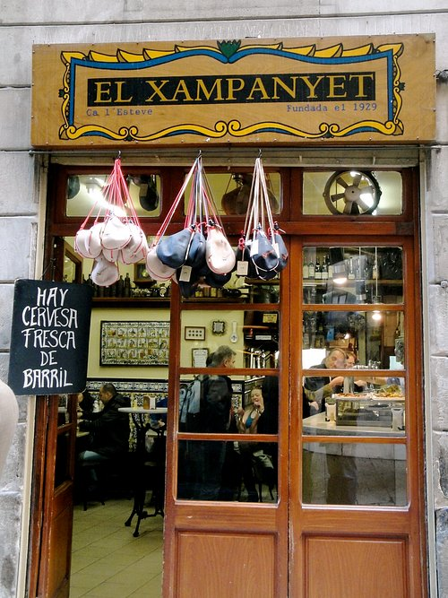
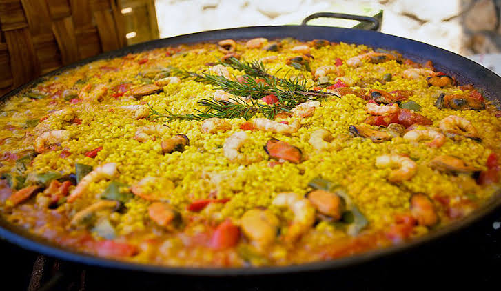

Booking Highlights - Barcelona

🏨 宿泊先: Room Mate Carla, Barcelona（ルームメイト カルラ）[cite: 2]
📍 住所: C/ de Mallorca, 288, 08037 バルセロナ、カタルーニャ州、スペイン[cite: 2]
🛏️ お部屋: ダブル/ツインルーム(バルコニー付) （9月18日チェックイン / 5泊）[cite: 2]
✈️ 往路: 9/17 15:20 成田 ➔ 9/18 07:55 バルセロナ（上海経由 / CA930 & CA839便）[cite: 1]
✈️ 復路: 9/23 12:50 バルセロナ ➔ 9/24 14:00 成田（上海経由 / CA840 & CA929便）[cite: 1]
Booking Highlights - Bilbao

🏨 宿泊先: Hesperia Bilbao（エスペリア ビルバオ）
📍 住所: Campo de Volantín Pasealekua, 28, 48005 ビルバオ, バスク州, スペイン
☎️ 電話: +34-94-4051100
🛏️ お部屋: スーペリアビュールーム(ダブルまたはツイン) （9月20日 15:00以降チェックイン / 9月21日 12:00までチェックアウト / 1泊）
✈️ 往路(BCN→BIO): 9/20 09:10 バルセロナ発 ➔ 10:25 ビルバオ着（Vueling航空 VY1422便）
✈️ 復路(BIO→BCN): 9/21 14:25 ビルバオ発 ➔ 15:35 バルセロナ着（Vueling航空 VY1429便）
About the Destinations

Barcelona
バルセロナ｜カタルーニャ州スペイン北東部、カタルーニャ州の州都。ガウディが手掛けたサグラダ・ファミリアやカサ・ミラ、カサ・バトリョなど独創的な建築が街中に点在します。地中海に面したビーチリゾートの一面も持ち、バルで軽い料理をつまみながらお酒を楽しむ「タパス文化」が根付いた活気ある街です。

Bilbao / Basque Country
ビルバオ｜バスク地方スペイン北部、独自の言語と文化を持つバスク地方最大の都市。かつての工業港湾都市が、1997年開館のグッゲンハイム美術館をきっかけに「文化による都市再生」を遂げたことで世界的に知られています。小皿料理を立ち飲みで楽しむ「ピンチョス」文化の本場でもあり、旧市街のバル巡りが人気です。
📸 Instagram Inspiration
投稿のURLをもらったら下部スクリプトの igPostUrls に追加してください。ここに自動で表示されます。
Destinations
📍 Barcelona
🗺️ 地図を読み込めませんでした
（広告ブロッカーや通信環境が原因の場合があります）
📍 Bilbao
🗺️ 地図を読み込めませんでした
（広告ブロッカーや通信環境が原因の場合があります）
🏨ホテル / 🍽️レストラン / 🛍️ショッピング / 📷観光名所
ピンをタップすると写真とスポット名が表示されます
Itinerary
Departure to Shanghai
SEP 17 | TOKYO ➔ SHANGHAI- 15:20：成田国際空港 (NRT) T1 出発（Air China CA930便）[cite: 1]
- 17:50：上海浦東国際空港 (PVG) T2 到着[cite: 1]
- 空港内で乗り継ぎの待機（6時間50分）[cite: 1]
Arrival in Barcelona
SEP 18 | SHANGHAI ➔ BARCELONA- 00:40：上海 (PVG) T2 出発（Air China CA839便）[cite: 1]
- 07:55：バルセロナ・エル・プラット空港 (BCN) T1 到着[cite: 1]
- タクシーでホテル「Room Mate Carla」📍地図へ移動し、荷物を預ける🚇最寄り：Verdaguer駅(L4/L5)[cite: 2]
- 15:00以降：ホテルにチェックインしてリラックス（長旅の疲れを癒す）[cite: 2]
※チェックイン時、現地税 17,060円の支払いと身分証明書の提示が必要です[cite: 2] - 🎫 サグラダ・ファミリアの入場予約あり（コード：104368787）
- 18:00：サグラダ・ファミリア📍地図入場（入口：Carrer de la Marina）🚇Sagrada Família駅(L2/L5)
- 18:45：塔(ナティビティ・ファサード側)見学
- ディナー：見学後、おしゃれな活気あるバル El Nacional📍地図 などでタパスを満喫！🚇Passeig de Gràcia駅(L2/L3/L4)

Gaudí Architecture & Gothic Quarter
SEP 19 | BARCELONA- 🎫 グエル公園の入場予約あり（予約番号：8903798）
- 10:00：グエル公園📍地図入場（Carrer d'Olot, 11）🚇Lesseps駅(L3)より徒歩約15分
※入場は予約時間の30分後まで有効。入場後の滞在時間に制限なし（再入場不可）

- 午後：グラシア通り周辺でカサ・ミラ📍地図やカサ・バトリョ📍地図を見学 ➔ そのまま歴史あるゴシック地区の路地裏散策🚇Diagonal駅(L3/L5)・Passeig de Gràcia駅(L2/L3/L4)


- ディナー：ゴシック地区散策の流れでそのまま El Xampanyet📍地図 へ。1929年創業の老舗タパスバルでスパニッシュディナー🚇Jaume I駅(L4)

Art & Pintxos (Trip to Bilbao)
SEP 20 | BARCELONA ➔ BILBAO- ⚠️ 大きなスーツケースはバルセロナのホテル「Room Mate Carla」📍地図に預けたまま、身軽な荷物で移動！
- 09:10：バルセロナ・エル・プラット空港 T1 出発（Vueling航空 VY1422便） ➔ 10:25：ビルバオ空港着
- 午後：グッゲンハイム美術館📍地図鑑賞🚇Moyúa駅(L1/L2)徒歩約10分・トラム Guggenheim停すぐ ＆ サン・マメス（スタジアム）📍地図周辺散策🚇San Mamés駅(L1/L2)
- 15:00以降：ホテル「Hesperia Bilbao」📍地図にチェックイン🚇Abando駅(L1/L2)より徒歩約12分・トラム Uribitarte停
- 夜：旧市街の 新広場 (Plaza Nueva)📍地図 で、本場のピンチョスと地ワイン（チャコリ）のバルハシゴ！広場沿いの Gure Toki・Bar Bilbao・La Olla de la Plaza Nueva が特におすすめ🚇Casco Viejo駅(L1/L2)
- 宿泊：Hesperia Bilbao
Return to the Coast
SEP 21 | BILBAO ➔ BARCELONA- 午前：ビルバオ旧市街でゆっくり朝食・散策
- 12:00まで：ホテル「Hesperia Bilbao」チェックアウト
- 14:25：ビルバオ空港出発（Vueling航空 VY1429便） ➔ 15:35：バルセロナ・エル・プラット空港着
- 午後：ホテル「Room Mate Carla」に戻り少しリラックス
- 夜：老舗 7 Portes (セッテ・ポルテス)📍地図 で絶品シーフードパエリアを堪能

Market, Shopping & Final Night
SEP 22 | BARCELONA

Heading Home
SEP 23 | BARCELONA ➔ SHANGHAI- 午前：ホテルで朝食後、パッキングを済ませてチェックアウト[cite: 2]
- 9:30頃：バルセロナ空港 (BCN) T1 へ移動
- 12:50：バルセロナ空港 (BCN) 出発（Air China CA840便）[cite: 1]
- 機内でゆっくりお休みください
Arrive in Japan
SEP 24 | SHANGHAI ➔ TOKYO- 07:25：上海 (PVG) T2 到着。乗り継ぎ（2時間35分）[cite: 1]
- 10:00：上海 (PVG) T2 出発（Air China CA929便）[cite: 1]
- 14:00：成田国際空港 (NRT) T1 到着！お疲れ様でした[cite: 1]